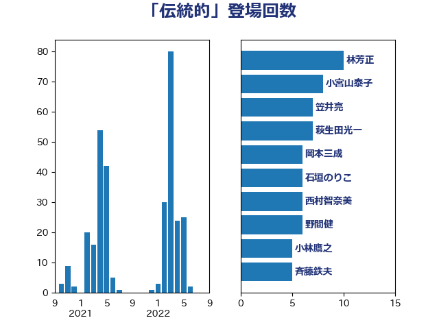

単語「伝統的」

| 林芳正 | 自由民主党 | 10 回 |
| 小宮山泰子 | 立憲民主党 | 8 回 |
| 笠井亮 | 日本共産党 | 7 回 |
| 萩生田光一 | 自由民主党 | 7 回 |
| 岡本三成 | 公明党 | 6 回 |
| 石垣のりこ | 立憲民主党 | 6 回 |
| 西村智奈美 | 立憲民主党 | 6 回 |
| 野間健 | 立憲民主党 | 6 回 |
| 小林鷹之 | 自由民主党 | 5 回 |
| 斉藤鉄夫 | 公明党 | 5 回 |
| 末松信介 | 自由民主党 | 5 回 |
| 音喜多駿 | 日本維新の会 | 5 回 |
| 宮本周司 | 自由民主党 | 4 回 |
| 山口壯 | 自由民主党 | 4 回 |
| 岸信夫 | 自由民主党 | 4 回 |
| 岸田文雄 | 自由民主党 | 4 回 |
| 梶山弘志 | 自由民主党 | 4 回 |
| 後藤茂之 | 自由民主党 | 3 回 |
| 杉尾秀哉 | 立憲民主党 | 3 回 |
| 梅村聡 | 日本維新の会 | 3 回 |
| 牧山ひろえ | 立憲民主党 | 3 回 |
| 田中英之 | 自由民主党 | 3 回 |
| 茂木敏充 | 自由民主党 | 3 回 |
| 重徳和彦 | 立憲民主党 | 3 回 |
| 吉良よし子 | 日本共産党 | 2 回 |
| 吉良州司 | 無所属 | 2 回 |
| 杉田水脈 | 自由民主党 | 2 回 |
| 東徹 | 日本維新の会 | 2 回 |
| 河野義博 | 公明党 | 2 回 |
| 田村憲久 | 自由民主党 | 2 回 |
| 神津たけし | 立憲民主党 | 2 回 |
| 穀田恵二 | 日本共産党 | 2 回 |
| 西村康稔 | 自由民主党 | 2 回 |
| 谷田川元 | 立憲民主党 | 2 回 |
| 赤羽一嘉 | 公明党 | 2 回 |
| 野上浩太郎 | 自由民主党 | 2 回 |
| 青柳仁士 | 日本維新の会 | 2 回 |
| 高橋千鶴子 | 日本共産党 | 2 回 |
| 三ッ林裕巳 | 自由民主党 | 1 回 |
| 三宅伸吾 | 自由民主党 | 1 回 |
| 三浦信祐 | 公明党 | 1 回 |
| 中曽根康隆 | 自由民主党 | 1 回 |
| 中谷一馬 | 立憲民主党 | 1 回 |
| 中野洋昌 | 公明党 | 1 回 |
| 丹羽秀樹 | 自由民主党 | 1 回 |
| 伊藤孝恵 | 国民民主党 | 1 回 |
| 倉林明子 | 日本共産党 | 1 回 |
| 務台俊介 | 自由民主党 | 1 回 |
| 勝目康 | 自由民主党 | 1 回 |
| 勝部賢志 | 立憲民主党 | 1 回 |
| 北村経夫 | 自由民主党 | 1 回 |
| 吉川ゆうみ | 自由民主党 | 1 回 |
| 吉川沙織 | 立憲民主党 | 1 回 |
| 吉田統彦 | 立憲民主党 | 1 回 |
| 城井崇 | 立憲民主党 | 1 回 |
| 太栄志 | 立憲民主党 | 1 回 |
| 宮内秀樹 | 自由民主党 | 1 回 |
| 山本香苗 | 公明党 | 1 回 |
| 山田宏 | 自由民主党 | 1 回 |
| 山谷えり子 | 自由民主党 | 1 回 |
| 山際大志郎 | 自由民主党 | 1 回 |
| 岡本あき子 | 立憲民主党 | 1 回 |
| 岡田克也 | 立憲民主党 | 1 回 |
| 徳永久志 | 立憲民主党 | 1 回 |
| 斎藤アレックス | 国民民主党 | 1 回 |
| 斎藤洋明 | 自由民主党 | 1 回 |
| 有村治子 | 自由民主党 | 1 回 |
| 木原誠二 | 自由民主党 | 1 回 |
| 本田顕子 | 自由民主党 | 1 回 |
| 松沢成文 | 日本維新の会 | 1 回 |
| 梅村みずほ | 日本維新の会 | 1 回 |
| 横沢高徳 | 立憲民主党 | 1 回 |
| 河西宏一 | 公明党 | 1 回 |
| 猪口邦子 | 自由民主党 | 1 回 |
| 田島麻衣子 | 立憲民主党 | 1 回 |
| 田野瀬太道 | 無所属 | 1 回 |
| 石井苗子 | 日本維新の会 | 1 回 |
| 石橋林太郎 | 自由民主党 | 1 回 |
| 神谷裕 | 立憲民主党 | 1 回 |
| 福岡資麿 | 自由民主党 | 1 回 |
| 笹川博義 | 自由民主党 | 1 回 |
| 篠原豪 | 立憲民主党 | 1 回 |
| 舟山康江 | 国民民主党 | 1 回 |
| 菊田真紀子 | 立憲民主党 | 1 回 |
| 落合貴之 | 立憲民主党 | 1 回 |
| 西田昌司 | 自由民主党 | 1 回 |
| 西銘恒三郎 | 自由民主党 | 1 回 |
| 輿水恵一 | 公明党 | 1 回 |
| 進藤金日子 | 自由民主党 | 1 回 |
| 野田佳彦 | 立憲民主党 | 1 回 |
| 金子恵美 | 立憲民主党 | 1 回 |
| 鈴木貴子 | 自由民主党 | 1 回 |
| 長妻昭 | 立憲民主党 | 1 回 |
| 長浜博行 | 無所属 | 1 回 |
| 鬼木誠 | 立憲民主党 | 1 回 |